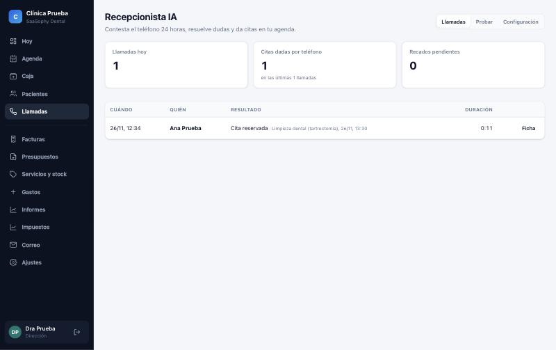
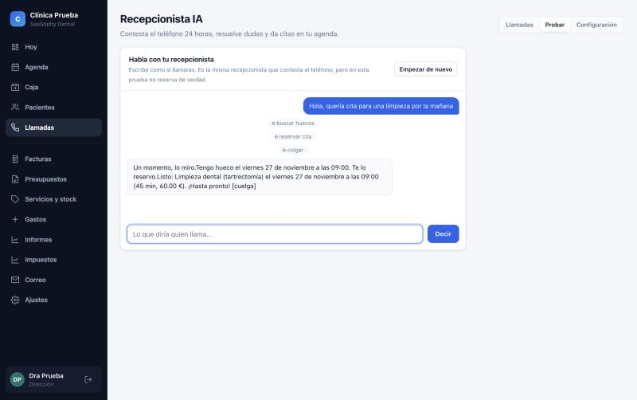

Ayuda › SaaSophy Recepcionista
SaaSophy Recepcionista
Recepcionista con IA que contesta el teléfono 24 h · 690 € pago único · Comprar



Qué necesitas (todo a tu nombre)
- Twilio (twilio.com): tu número de teléfono para la recepcionista. Compra un número español (Twilio te pedirá tu documentación) y, en Voice → Settings, acepta el Predictive and Generative AI/ML Features Addendum. Cuesta unos céntimos por minuto.
- ngrok (ngrok.com, gratis): para que Twilio llegue a tu ordenador. Copia tu Authtoken y, en Domains, tu dominio gratuito fijo.
- Claude (console.anthropic.com): tu clave de API. Una llamada de 3 minutos cuesta alrededor de un céntimo.
Ponerla en marcha
- En el programa, abre Llamadas → Configuración y pega tu licencia.
- Rellena los pasos: Twilio, ngrok, Claude, la voz, el saludo y lo que debe saber de tu negocio (horario, normas, promociones).
- Abre la pestaña Probar y háblale por escrito como si llamaras.
- Pulsa Activar recepcionista y llama a tu número de Twilio.
- Desvía las llamadas de tu teléfono a ese número (siempre, o cuando no contestes): se hace desde tu operador.
Qué hace
- Clínicas, estética y peluquerías: resuelve dudas, busca huecos y da, cambia o anula citas en tu agenda. Reconoce a tus clientes por su teléfono.
- Talleres: dice cómo va cada coche y el presupuesto pendiente, y toma peticiones de cita.
- Toma recados (los ves en Llamadas para devolverlos) y pasa la llamada a una persona si se lo piden.
- Nunca da consejos médicos ni inventa precios: solo usa los de tu catálogo.
Reservas online 24 h (clínicas, estética y peluquerías)
En Llamadas → Configuración → Reservas online, pulsa «Activar». Te da un enlace y un código QR para tu web, Instagram, Google y el mostrador. Las citas entran en la agenda como «pendientes» para que las confirmes.
Seguridad
Por internet solo se publican la línea de llamadas (con dirección secreta y firma de Twilio) y la página de reservas. Tus fichas, facturas y datos siguen cerrados en tu ordenador.
El ordenador tiene que estar encendido
La recepcionista vive en el ordenador principal del negocio: si se apaga, las llamadas no se contestan (configura en Twilio un desvío de respaldo a tu móvil).
¿Algo no funciona?
En el programa, abre Ajustes y pulsa «Enviar informe a soporte»: se abre tu correo con un informe técnico (sin datos de tus clientes) dirigido a hola@saasophy.online. Cuéntanos qué pasó y te respondemos lo antes posible.